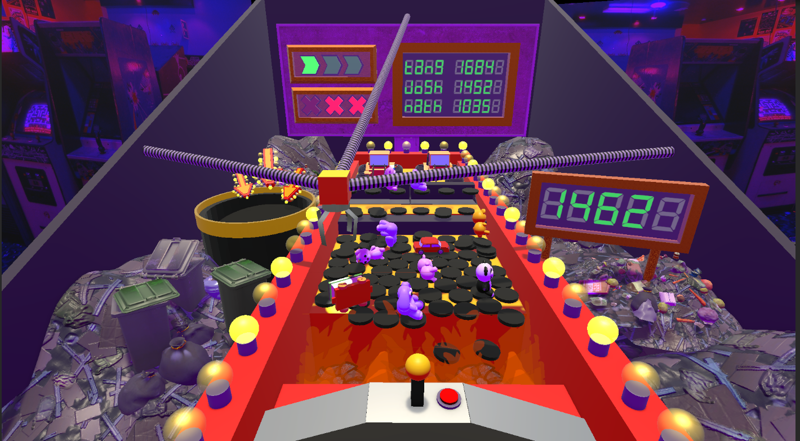
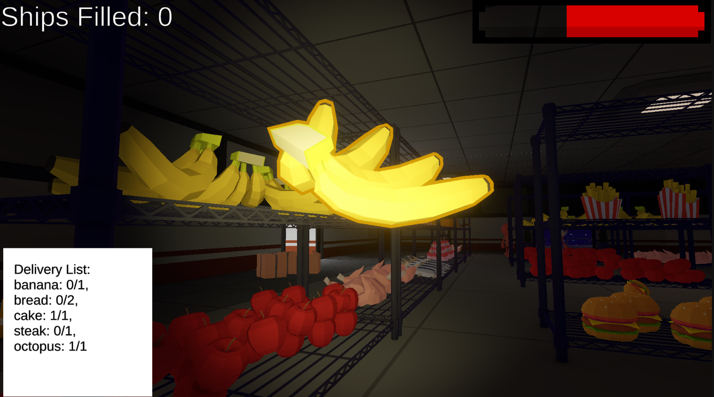
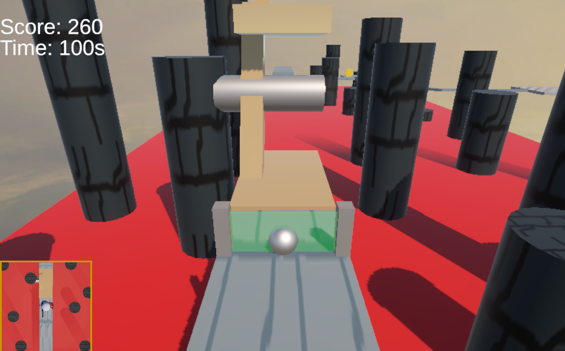
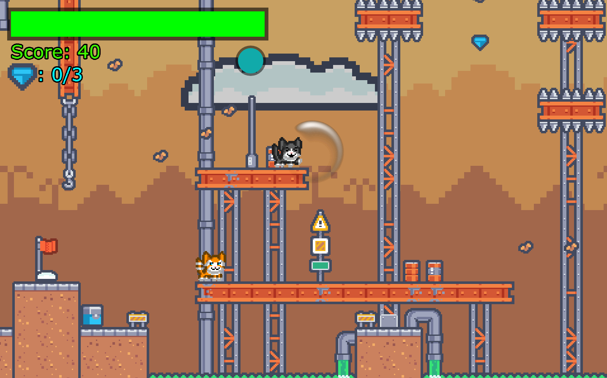
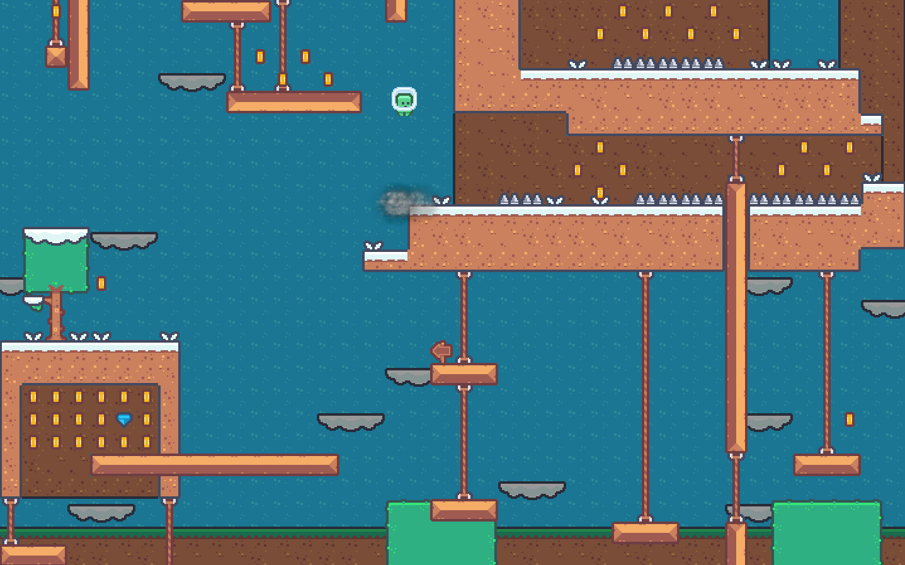
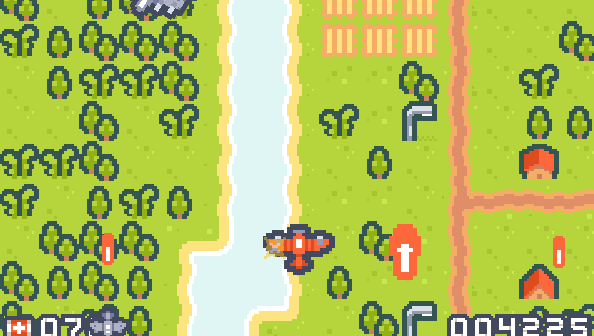

Projects
My Work
Here you'll find all of my game design related projects, included are personal projects, school projects, and game jams.
My featured projects are the ones I'm most proud of but feel free to explore all of them!
Featured Projects
These are the projects I'm most proud of, showcasing my skills and creativity. A case study is available for each project.
Tanktrition
Tanktrition is a top-down 2D roguelike where you control a formation of tanks battling through waves of enemies summoned by opposing directors that you choose! I designed the core gameplay loop, some UI elements, and scripted enemy, player, and projectile behaviors
Currently In Development
These are the projects I'm actively iterating on. They may still be changing, but they reflect the direction I'm currently pushing my work.
Additional Projects
Here are some of my other projects that I'm proud of. Feel free to explore and check out the ones that catch your eye!
-
The Clawwwwwwww

The Clawwwwwwww is a simulation game where the player controls a claw machine to save toys from falling into a pit of fire! This project was 2 weeks long in a group of 6, where I primarily focused on the diagetic UI elements, shaders, and data management systems.
-
Alein Store

Alein Store is a shopping simulation prototype born from a unique challenge: taking the theme of "wrong genre" and turning it into an engaging game concept. This project was 2 weeks long in a group of 6, where I primarily focused on gameplay mechanics and UI elements.
-
Unnamed Marble Game

Unnamed Marble Game is a physics puzzle game where you play as a marble and navigate through a challenging and slightly rage-inducing level. This project was 2 weeks long in a group of 2, where I primarily focused on gameplay mechanics and level design.
-
Citty Kat

Citty Kat is a 2D platformer where you must get back to your home! This group project focused on level design, gameplay mechanics, and teamwork. This project was 2 weeks long in a group of 3, where I primarily focused on level design, movement, and UI.
-
Josh's Jumpy Jumble

Josh's Jumpy Jumble is a short 2D platformer where you must collect all the diamonds littered around the map without dying. The main focus of this project was on level design, movement mechanics, and rage inducing gameplay. This project was 2 weeks long.
-
Bombardillo Red!

Bombardillo Red is a gallery shooter where you play as a fighter plane fighting through waves of enemies. Each level increases the enemie's stats and gives you a set of upgrade choices. This was my first project using Phaser, which lasted for 2 weeks.